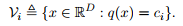
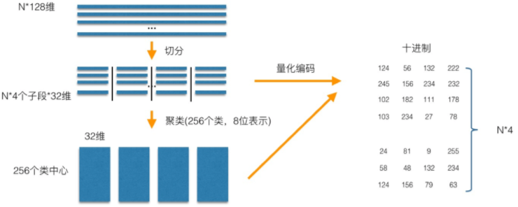
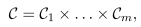
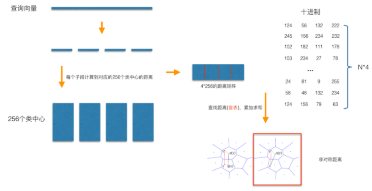
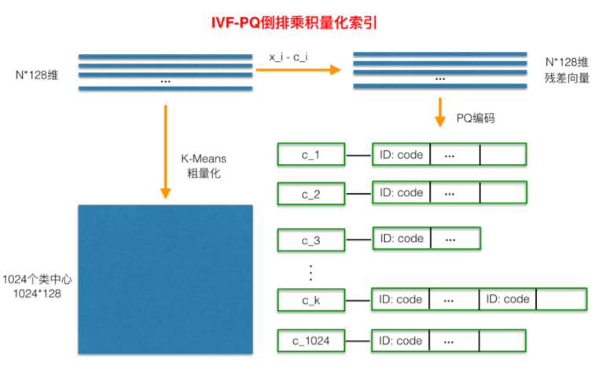
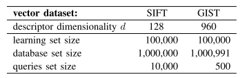
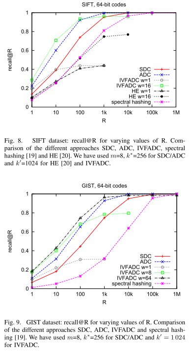
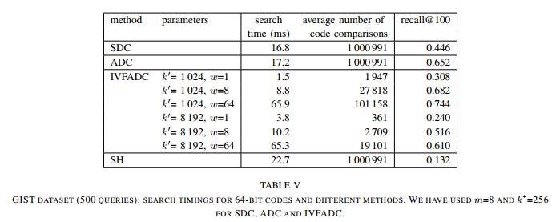

Product quantization for nearest neighbor search
最近研究了product quantization这篇论文: paper
对图像检索有了很多新认识，以后还要多看论文啊。
摘要
这篇文章主要介绍了用于实现最近邻搜索的乘积量化方法，主要思想：将一个高维向量压缩至低维空间的笛卡尔积，再在子空间内进行量化（K-means构造码本）用一个很短的编码表示，查询矢量通过异步方式计算与码本的距离得到相似度。在SIFT和GIST数据集上实验结果比HE、FLANN好，加入倒排文件系统后实验结果更好。
乘积量化
矢量量化（vector quantization）：将一个向量空间中的点用其中一个有限子集来进行编码的过程。即定义一个映射函数称为量化器q，将高维空间中的向量映射为低维空间中的质心，质心集合称为码本，大小为k，一个质心内的所有向量构成了一个Voronoi cell

乘积量化（product quantization）：本质上为低维子空间上分别做矢量量化再做笛卡尔积，一个乘积量化构造码本的过程如下

假设样本维度为D=128 m=4，D’=D/m=32，对每个子向量进行K-means聚类，图中聚为256类，每个子向量有256个质心称为码本 大小为k’ (k=(k’)^m)，通过训练每个子段样本将所有子向量用质心近似得到短编码，m=1时PQ回退为矢量量化，m=D时PQ相当于对每一维都聚类算出码本。

建立完码本之后便开始计算距离查询样本。距离计算有对称非对称两种方式，文中结论为非对称距离损失小，也就是将数据集中向量量化而查询向量不做处理。具体查询过程：将查询向量分段后计算每个子段到对应256个质心的距离，得到256*4的距离矩阵作为距离池（这样在检索时只用查表复杂度O(1)）。在计算库中向量到查询向量距离时，分别到距离池中取出相应子段距离然后相加，选出topk后再re-ranking。

倒排乘积量化
IVFADC:an inverted file system with the asymmetric distance computation .
乘积量化计算距离进行NN-search虽然快，但是检索时还需要将库中所有向量的子段距离相加选出距离最短的，但实际上我们只关心那些跟查询向量相近的。论文提出了倒排文件系统，再PQ之前先进行粗量化，也就是先对训练样本进行聚类比如1024类，然后对实际向量与质心的距离（残差向量）做乘积量化，具体步骤如下图。
用PQ处理残差而不是原始数据的原因：残差的方差或者能量比原始数据的方差或者能量要小（The energy of the residual vector is small compared to that of the vector itself.）

倒排索引的建立和查询过程：
Indexing
- 将库中向量量化 y–>q(y)
- 计算误差 r(y)=y-q(y)
- 乘积量化误差 r(y)–>q(r(y)) 产生低维编码
- 加入倒排文件系统q(y)，包括向量id和乘积量化编码
Searching
- 将查询向量x量化，选出这距离最近的w个质心qc，取出相应w倒排链
- 查询向量误差 r(x)=x-q(x)
- 计算误差与质心的距离（y误差的质心q(r(y))）,d(Uj(r(x)), Cj,i)通过异步方式计算出PQ距离
- 堆排序选topk
数据集

实验结果
综合考虑向量的编码长度和平方误差，得出一种默认配置k’=256,m=8,用64bit表示向量


参考文献
http://yongyuan.name/blog/ann-search.html
http://blog.csdn.net/mqfcu8/article/details/45023987
http://vividfree.github.io/%E6%9C%BA%E5%99%A8%E5%AD%A6%E4%B9%A0/2017/08/05/understanding-product-quantization